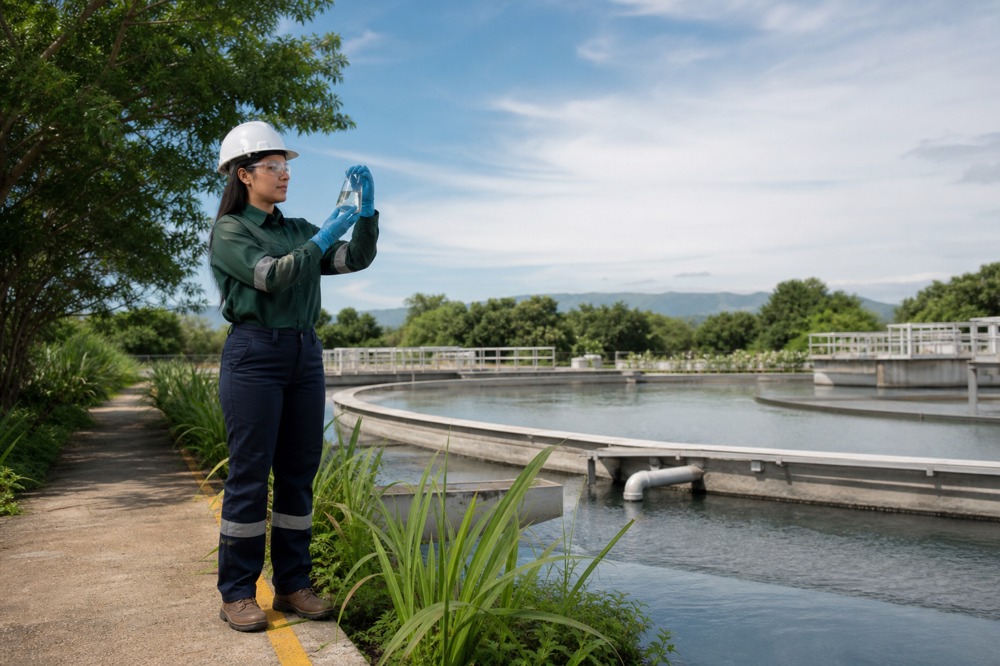

Seguridad laboral
Diagnósticos y estudios para reducir riesgos y fortalecer el cumplimiento ante la STPS.
- Ruido e iluminación
- Riesgo eléctrico e incendio
- EPP y sustancias químicas
Seguridad · Medio ambiente · Cumplimiento
Acompañamos a empresas e industrias para prevenir riesgos, cumplir con la regulación y construir operaciones responsables.
Lo que resolvemos
Conectamos el trabajo técnico, documental y regulatorio en una ruta clara para tu empresa.
Diagnósticos y estudios para reducir riesgos y fortalecer el cumplimiento ante la STPS.
Permisos, registros y planes para operar conforme a obligaciones federales, estatales y municipales.
Preparación técnica para responder a emergencias, proteger a las personas y cuidar la continuidad.
Muestreo y análisis con respaldo acreditado para obtener resultados confiables y accionables.
Seguridad en el trabajo
Evaluamos las condiciones reales de tu centro de trabajo y transformamos los hallazgos en prioridades concretas.
Gestión ambiental
Integramos trámites, monitoreo y análisis para mantener el control ambiental de tu operación y anticipar contingencias.

Programa anual EcoSure
Un sistema de prevención y cumplimiento que mantiene ordenados los riesgos, compromisos y vencimientos de tu empresa.
Conocer el programaMapa de riesgos y obligaciones prioritarias.
Acciones, responsables y calendario.
Evidencias, permisos y vencimientos bajo control.
Revisión periódica del avance y nuevos riesgos.
Cambios normativos traducidos en decisiones.
Acompañamiento técnico cuando más importa.
Quiénes somos
En EcoSure ayudamos a convertir las obligaciones regulatorias en procesos claros que generan confianza, continuidad y valor para la empresa.
Explicamos lo complejo de forma útil para decidir.
Actuamos antes de que un riesgo se vuelva contingencia.
Acompañamos cada etapa y damos seguimiento real.
Hablemos de tu operación
Cuéntanos qué necesita tu empresa y prepararemos una ruta clara para avanzar.